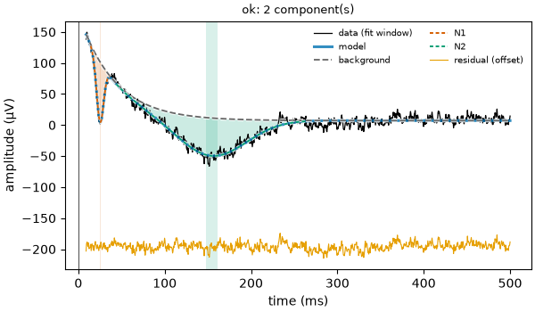
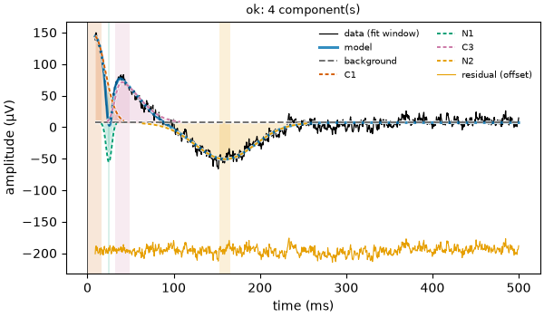

Note
Go to the end to download the full example code.
10: Tuning the fit¶
Change the settings of the model, and see what each one does to the result.
Introduction¶
In the earlier tutorials, the preset "ccep" chose every setting for us. A
setting is a choice made before the fit: how many bumps at most, which way they may
go, how sure the model must be before it keeps a bump, what shape the background has.
The preset is a good start. But each setting can be changed, by giving it to
fit_response or report by its name, next to the preset. Everything not given
keeps the preset’s value.
Here we change the settings one at a time, on the same curves, and look at what moves.
# Import what we need
from evoparam import fit_response, gen_response, plot_fit, presets
To compare the fits quickly, we write a small helper that prints one line per bump.
def show(fit):
"""Print the name, latency (ms) and amplitude (µV) of every bump of a fit."""
for bump in fit.components:
print(f" {bump.label}: {bump.latency_ms:.0f} ms, {bump.amplitude:.0f} µV")
print(f" R² = {fit.gof.r2:.2f}")
Seeing the settings¶
Every fit keeps the settings it used in fit.settings. We make a curve with three
bumps: the two of the first tutorial, and between them a smaller one that goes up,
at 60 ms.
# Three bumps: [latency (ms), amplitude (µV), width (ms)]
times, signal = gen_response([[25, -150, 10], [60, 50, 20], [150, -80, 80]], seed=3)
# Fit with the preset alone
fit = fit_response(times, signal, preset="ccep", random_state=0)
show(fit)
# A few of the settings the preset chose
print(fit.settings["max_components"], fit.settings["polarity"], fit.settings["background"])
N1: 25 ms, -151 µV
C2: 60 ms, 50 µV
N2: 152 ms, -77 µV
R² = 0.95
6 both exponential
evoparam found the three bumps. The one going up is called C2: the "ccep" preset
only has names for the bumps that go down (N1, N2), so the others get a number in
order of time (“component 2”).
The preset allows up to 6 bumps (max_components), in both directions (polarity),
on an exponential background (background).
Note
random_state=0 fixes the starting points of the fit, so that you get the same
result each time you run this page. report does it on its own.
How many bumps at most¶
max_components is the largest number of bumps the model may use. It never adds
bumps that are not there: it only stops the search early. Here we allow 2.
# At most 2 bumps
fit_two = fit_response(times, signal, preset="ccep", max_components=2, random_state=0)
show(fit_two)
N1: 25 ms, -160 µV
N2: 151 ms, -82 µV
R² = 0.90
The model kept the two largest bumps and left out the small one. R² went down from 0.95 to 0.90: the small bump is now in what is left over.
Use it when you know how many bumps to expect, for example only the N1 with
max_components=1. If you do not know, keep the preset’s value: evoparam stops on its
own when no new bump helps.
Which way the bumps go¶
polarity says which bumps are allowed:
"both": up and down (the default);"negative": only bumps that go down;"positive": only bumps that go up.
# Only bumps that go down
fit_down = fit_response(times, signal, preset="ccep", polarity="negative", random_state=0)
show(fit_down)
N1: 25 ms, -160 µV
N2: 151 ms, -82 µV
R² = 0.90
The bump going up is gone: only N1 and N2 are left. This is useful when the response you study always goes one way, but be careful: a real bump in the other direction is then left in the leftover, and it can shift the neighbouring bumps a little.
How sure before keeping a bump¶
evoparam adds bumps one at a time and keeps a new one only if it makes the fit clearly better. “Clearly better” is measured with the BIC (Bayesian information criterion): a score of how well the model follows the curve, with a cost for every number the model uses. Lower is better.
delta is how much the BIC must go down for a new bump to be kept. The default is 10:
a new bump must lower the BIC by 10 or more.
A larger
deltais stricter: fewer bumps, fewer bumps made of noise, but small real bumps can be missed.A smaller
deltais looser: more small bumps are found, but some of them can be noise.
Here is a curve with a large N1, a small real bump at 300 ms (−20 µV) and, in the noise, a slow wiggle near 480 ms that is not a real bump.
# A large N1 and a small bump at 300 ms
times2, signal2 = gen_response([[25, -150, 10], [300, -20, 40]], seed=2)
# The preset's delta (10), then a stricter one (40)
print("delta = 10")
show(fit_response(times2, signal2, preset="ccep", random_state=0))
print("delta = 40")
show(fit_response(times2, signal2, preset="ccep", delta=40, random_state=0))
delta = 10
N1: 25 ms, -148 µV
delayed: 303 ms, -19 µV
delayed_b: 484 ms, 19 µV
R² = 0.89
delta = 40
N1: 25 ms, -147 µV
delayed: 303 ms, -21 µV
R² = 0.85
With delta=10, evoparam keeps three bumps: the N1, the small real bump at 300 ms,
and the wiggle of the noise at 484 ms. With delta=40, the wiggle is dropped and the
two real bumps stay.
The bumps after 100 ms that are not an N2 are called delayed by the "ccep" preset
(delayed_b for the second one).
Another way to drop small bumps is min_amplitude: the smallest height a bump may
have, in µV (0, the default, means no limit). It is simpler to understand, but it does
not look at the noise: it drops small real bumps just as well.
# Bumps smaller than 30 µV are not kept
show(fit_response(times2, signal2, preset="ccep", min_amplitude=30, random_state=0))
N1: 25 ms, -148 µV
R² = 0.78
Only the N1 is left: the small real bump at 300 ms is gone too.
Note
Change delta or min_amplitude only for a reason you can write in your
methods, and keep the same value for every curve you compare. Lowering it until a
bump “appears” is a way to find bumps that are not there.
The shape of the background¶
The background is the slow part of the curve that is not a bump (tutorial 01). Its
shape is set by background:
"constant": a flat line;"linear": a straight line that may slope;"exponential": a jump that fades away (the default of"ccep"), like the recording equipment recovering after an electrical pulse;"double_exponential": two of them, one fast and one slow.
If the background shape cannot follow the real background, the model uses bumps to make up for it. Here is a curve with a strong fading background.
# Two bumps on a strong background: [height (µV), how fast it fades (ms)]
times3, signal3 = gen_response([[25, -100, 10], [150, -60, 80]], background=[200, 40], seed=1)
# The preset's background (exponential)
fit_exp = fit_response(times3, signal3, preset="ccep", random_state=0)
show(fit_exp)
fig = plot_fit(fit_exp)

N1: 25 ms, -97 µV
N2: 154 ms, -61 µV
R² = 0.96
# A flat background
fit_flat = fit_response(times3, signal3, preset="ccep", background="constant", random_state=0)
show(fit_flat)
fig = plot_fit(fit_flat)

C1: 8 ms, 137 µV
N1: 25 ms, -63 µV
C3: 40 ms, 64 µV
N2: 160 ms, -58 µV
R² = 0.96
With the exponential background, the two bumps come out close to what we put in (−100 and −60 µV). With a flat background, the fading jump cannot be followed, so the model invents bumps going up to imitate it, and the N1 comes out much smaller than it is.
The R² is about the same for both: a good R² says the model follows the curve, not that the parts are the right ones. This is why the figure is worth a look.
Choosing a preset, and making your own¶
Each preset holds the settings made for one kind of recording: "ccep" and
"ccep_seeg" for electrical pulses in the brain, "erp" for scalp EEG, "sep"
for touch, "tep" for magnetic pulses (TMS), and a few more. Start with the one of
your recording.
To keep your own changes in one place, presets.derive makes a new preset from an
existing one. The new preset remembers where it comes from, and this is written in the
methods text.
# A preset like "ccep", but stricter and with only bumps that go down
strict_ccep = presets.derive("ccep", delta=40.0, polarity="negative")
# Use it like any preset
show(fit_response(times2, signal2, preset=strict_ccep, random_state=0))
N1: 25 ms, -147 µV
delayed: 303 ms, -21 µV
R² = 0.85
Note
Try it yourself: on the first curve, ask for max_components=1, or
polarity="positive"; on the last one, try background="linear". Each time,
look at the bumps and at the figure (plot_fit).
Conclusion¶
The preset gives every setting a value; any of them can be changed by its name.
max_components and polarity limit what bumps are allowed, delta and
min_amplitude decide how sure the model must be before it keeps a bump, and
background sets the shape of the slow part. Change one at a time, check the figure,
and keep the same settings for all the curves you compare.
Total running time of the script: (0 minutes 2.687 seconds)